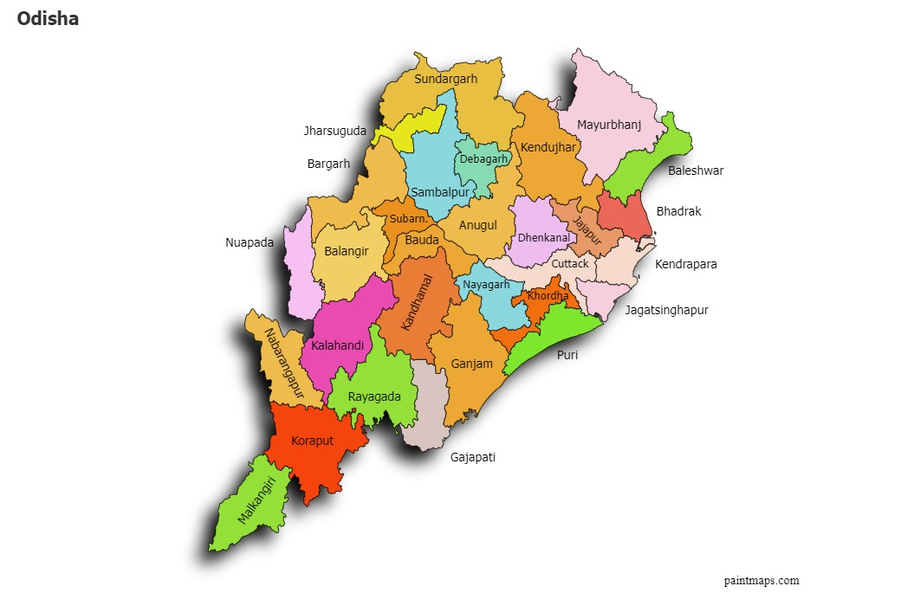

| Name: | Odisha |
|---|---|
| Capital: | Bhubaneswar |
| Language: | Odia |
| Chief Minister: | Naveen Patnaik |
| Total Districts: | 30 |
| Population: | ~41 million (as per 2011 census) |
| Formation: | 1 April 1936 |
| Area: | 155,707 km² (8th largest in India) |
| Borders: | West Bengal, Jharkhand, Chhattisgarh, Andhra Pradesh |
| Coastline: | ~480 km along the Bay of Bengal |
Know more